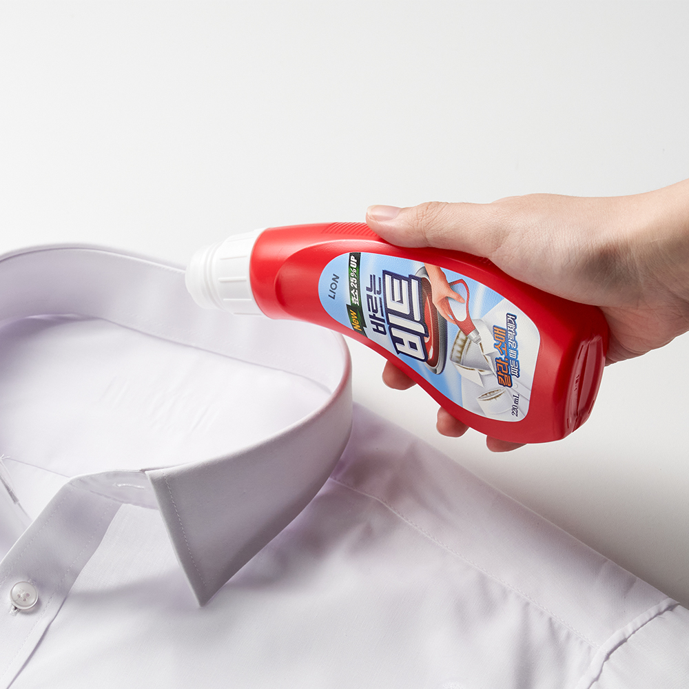
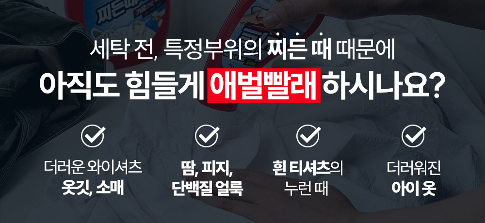
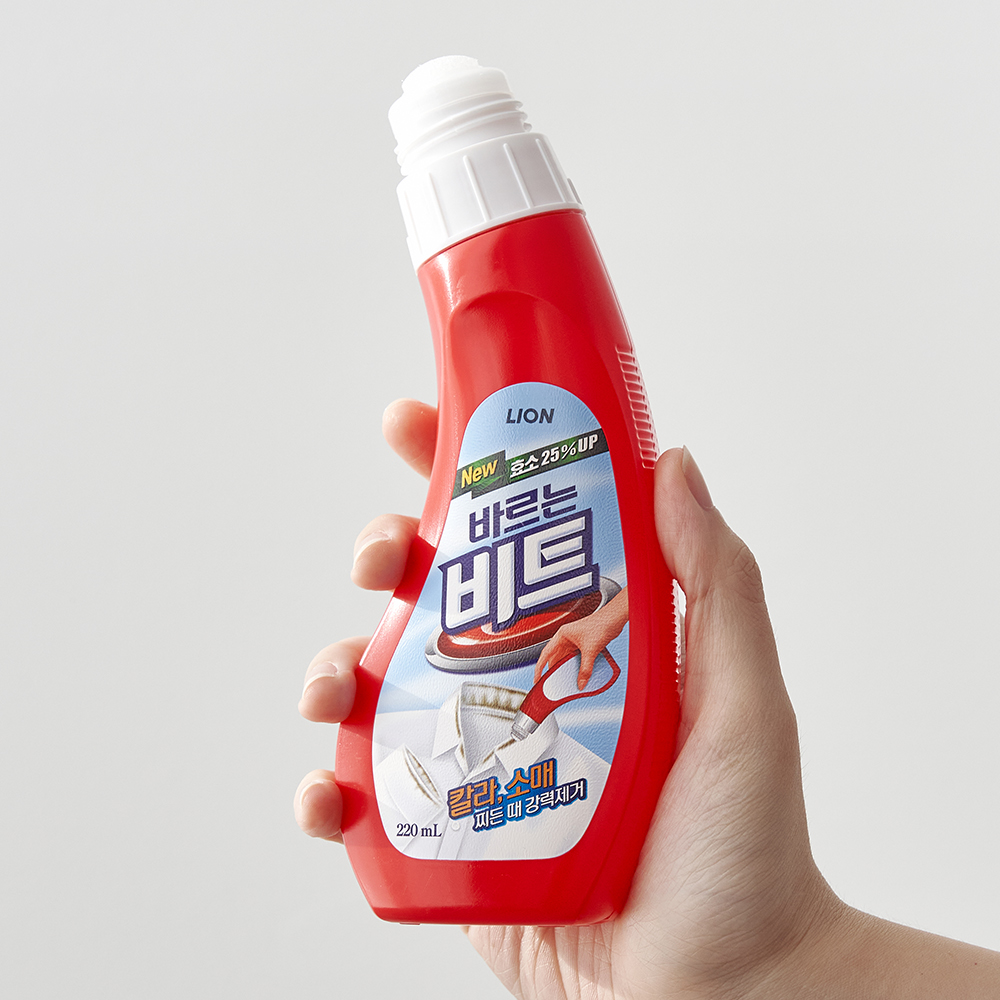
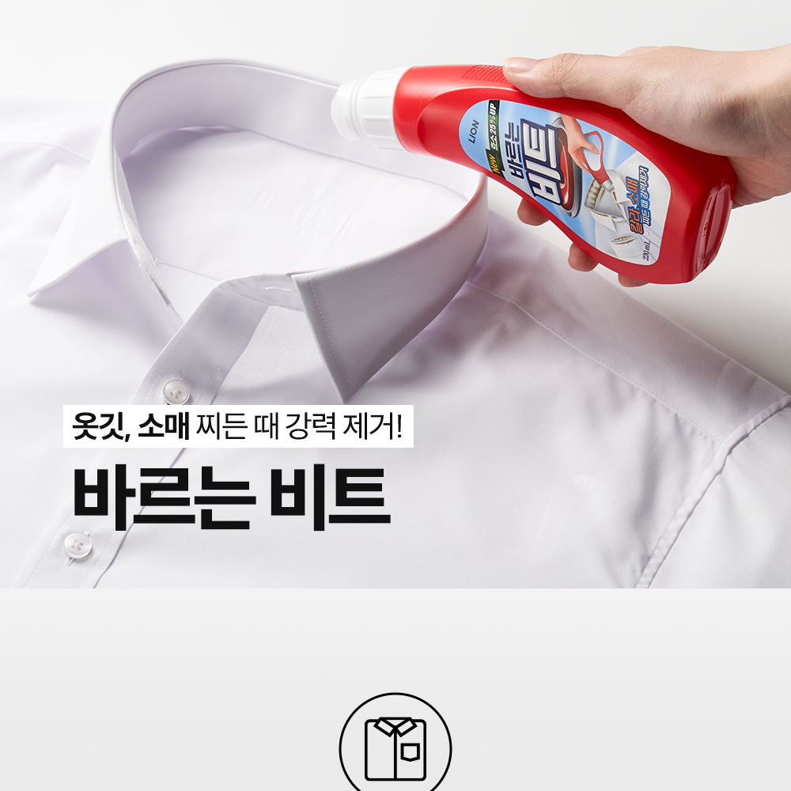
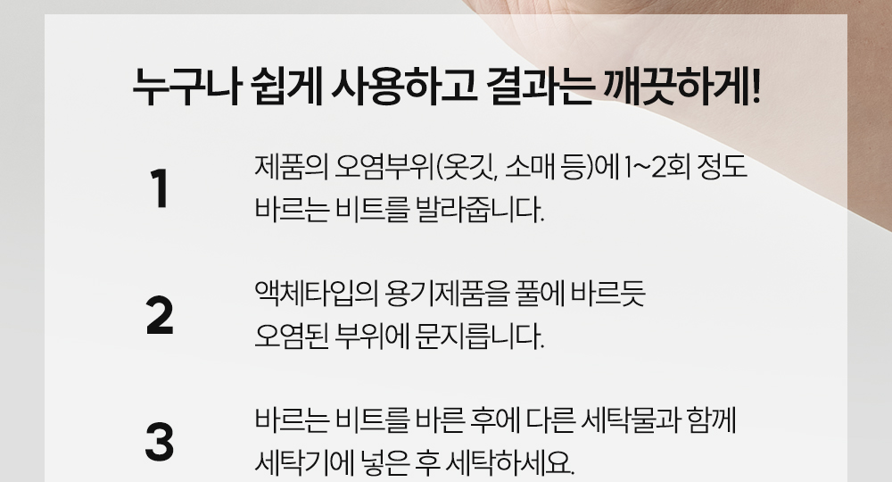
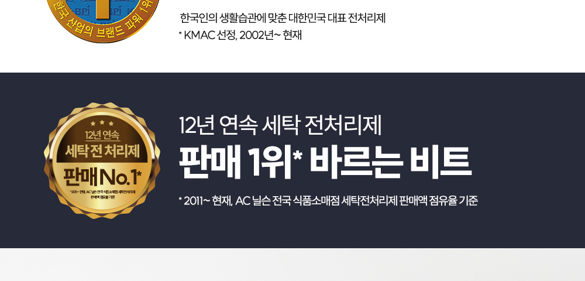
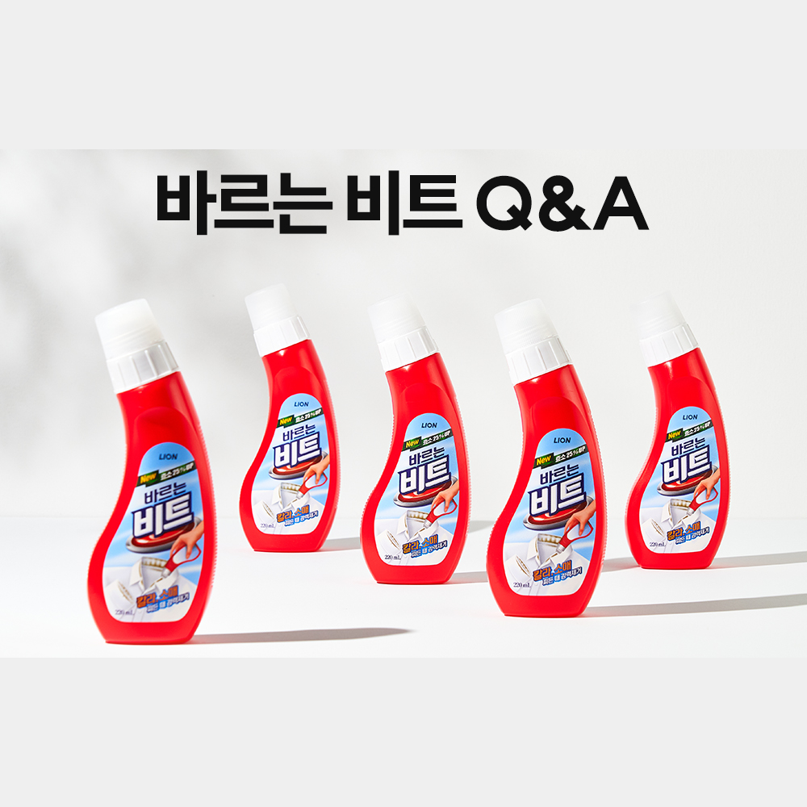
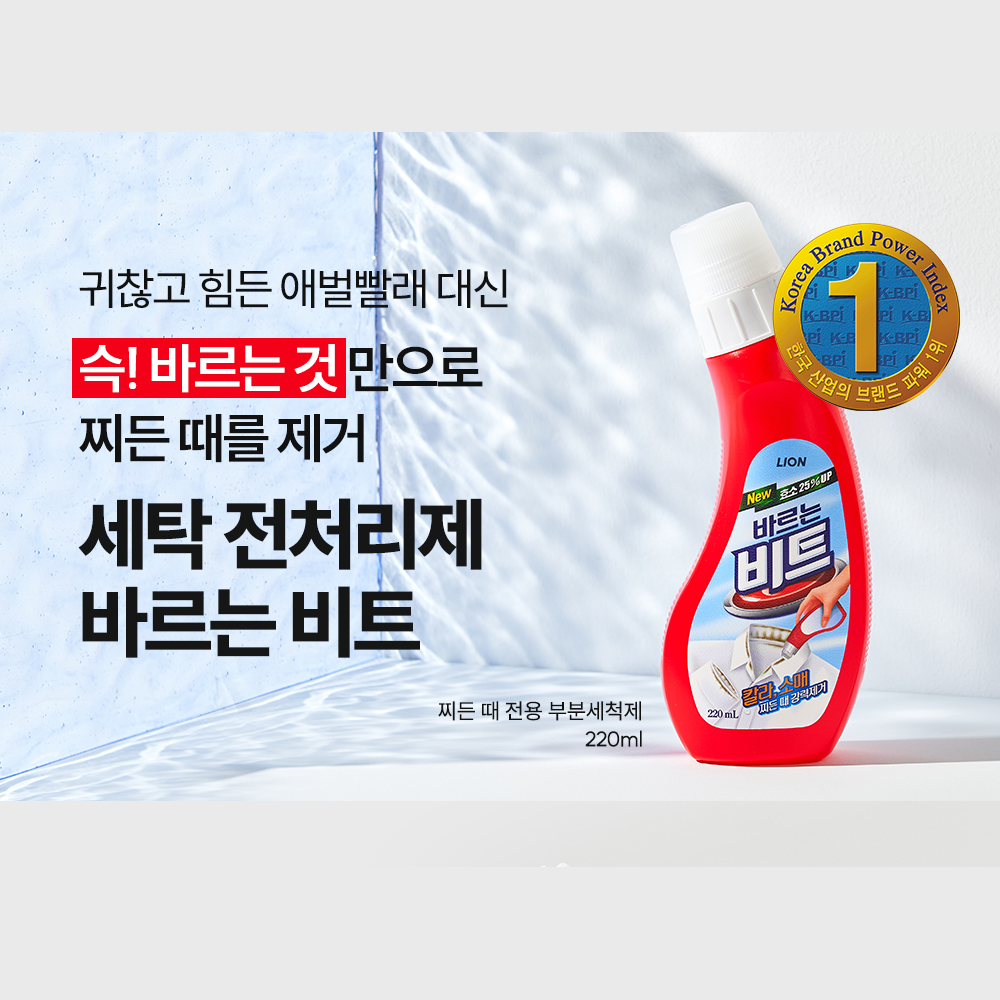

세탁기 넣기 전, 10분 동안 옷깃 붙잡고 비벼 빠는 손빨래
비누 칠하고, 손바닥으로 문지르고, 헹구고… 고단한 하루 끝에 찾아오는 가장 귀찮은 가사 노동입니다.
오늘도 퇴근하자마자 누런 셔츠 깃 붙잡고 비누로 비벼 빨고 계셨나요?
손목 아픈 애벌빨래 대신 5초 롤링으로 찌든 때 분해. 물 묻힐 필요 없이 쓱 바르면 특화 효소가 누런 피지와 얼룩을 알아서 녹여냅니다.
이 포스팅은 쿠팡 파트너스 활동의 일환으로, 이에 따른 일정액의 수수료를 제공받습니다.
안내 쿠팡 상품 페이지에서 실시간 가격·배송 일정 및 잔여 수량을 확인하실 수 있습니다.

DAILY PAIN POINT
세탁기에 그냥 넣자니 찌든 때가 안 빠지고, 비벼 빨자니 손목이 시큰거립니다.
우리가 매일 겪는 와이셔츠 세탁의 끝없는 피로, 당신만의 고민이 아닙니다.

비누 칠하고, 손바닥으로 문지르고, 헹구고… 고단한 하루 끝에 찾아오는 가장 귀찮은 가사 노동입니다.
일반 세제로는 섬유 깊숙이 침투한 사람 몸의 단백질과 유분 때가 분해되지 않아 점점 누렇게 착색됩니다.
강하게 비벼 빨아 옷깃은 헤어지고, 세탁소에 매번 맡기자니 비용이 부담스러워 결국 셔츠를 버리게 됩니다.
INNOVATIVE SOLUTION
비비지 않아도 특화 효소가 피지 찌든 때를 알아서 분해합니다.

손에 세제 한 방울 묻히지 않는 롤온 방식입니다. 용기를 가볍게 눌러 문지르면 내장 솔이 섬유 올 사이사이에 세제액을 골고루 침투시킵니다.

사람의 땀과 피지는 단순 계면활성제만으로 빠지지 않습니다. 활성 효소가 찌든 때의 단백질 연결고리를 직접 끊어내어 세탁기 안에서 말끔히 씻겨 나가게 만듭니다.

오염된 셔츠 깃이나 소매 부위에 1~2회 가볍게 발라줍니다.
용기 상단의 일체형 솔로 풀칠하듯 골고루 문질러줍니다.
다른 빨랫감과 함께 세탁기에 넣고 일반 코스로 세탁합니다.
PROVEN SATISFACTION
제조사의 일방적인 주장이 아닙니다. 실제 12년 동안 소비자들의 검증을 받아온 기록입니다.

"남편 출근 셔츠 목덜미 누런 때 때문에 매일 애벌빨래하느라 지쳤는데, 물도 안 묻히고 슥슥 바르고 세탁기 돌리니 누런 때가 감쪽같이 빠집니다. 손목 통증에서 완벽 탈출했어요."
"아이 교복 카라에 묻은 선크림이랑 찌든 때가 일반 세제로는 안 지워져서 속상했는데, 톡톡 발라 돌렸더니 삶은 빨래처럼 하얗게 복원됐습니다. 교복 입는 집은 필수템입니다."
"스프레이형은 공기 중에 흩날리고 낭비가 심했는데, 이건 풀칠하듯 오염 부위에만 롤링되니까 훨씬 알뜰하고 정확하게 때가 빠집니다. 냄새도 순해서 실내에서 쓰기 좋아요."
"세면대에서 손빨래하기 귀찮아서 미루다 흰 셔츠 몇 벌 버렸거든요. 이제 세탁기 바로 옆에 올려두고 세탁물 넣기 직전 5초만 바르면 되니까 삶의 질이 수직 상승했습니다."
구매 전 확인
옷감 손상 걱정부터 세탁기 호환성까지, 구매 전 불안을 미리 풀어드립니다.

물세탁이 가능한 의류라면 색깔 셔츠에도 안심하고 사용하실 수 있습니다. 락스와 같은 염소계 표백 성분이 아니라, 섬유에 온화한 비이온 계면활성제와 단백질 분해 효소를 사용하기 때문입니다. 단, 특수 염색 의류나 탈색이 우려되는 옷은 눈에 띄지 않는 안쪽 솔기에 소량을 먼저 테스트한 후 사용하시기를 권장합니다.
네, 모든 세탁기(드럼·일반 통돌이세탁기 구분 없음)에서 완벽하게 호환됩니다. 바르는 비트는 세탁기에 세제를 붓는 것이 아니라, 오염된 목깃과 소매에 미리 발라두는 '전처리제'입니다. 바른 후 평소 사용하시던 일반 세제와 함께 세탁기에 넣고 표준 코스로 돌려주시면 됩니다.
일상적인 출퇴근 착용 후 생긴 목때는 1회 도포만으로도 말끔히 지워집니다. 다만, 이미 몇 달 이상 방치되어 섬유 속까지 완전히 산화·고착된 오래된 누런 때는 1회 도포 시 약 70~80% 완화되며, 2~3회 반복 세탁 시 본래의 깨끗한 상태로 복원됩니다. 오염 직후 발라주실수록 가장 뛰어난 세척 효과를 얻을 수 있습니다.
FINAL DECISION
비누칠하고 손목 아프게 비벼 빨던 10분의 고통, 이제 세탁기 넣기 전 5초 슥 바르는 것으로 끝내세요. 커피 한 잔도 안 되는 비용(개당 2,650원)으로 아끼는 와이셔츠를 새 옷처럼 지켜드립니다.
5초 롤링으로 애벌빨래 완료
6개 15,920원의 넉넉한 가성비
오늘 주문 시 내일 바로 도착
이 포스팅은 쿠팡 파트너스 활동의 일환으로, 이에 따른 일정액의 수수료를 제공받습니다.
안내 옵션, 실시간 가격, 로켓배송 가능 여부는 쿠팡 상품 페이지에서 바로 확인하고 결정하실 수 있습니다.

구매 링크 안내
현재 단계는 프로토타입 상태입니다.
쿠팡 파트너스 제휴 링크는 다음 실습 단계에서 연결될 예정입니다.